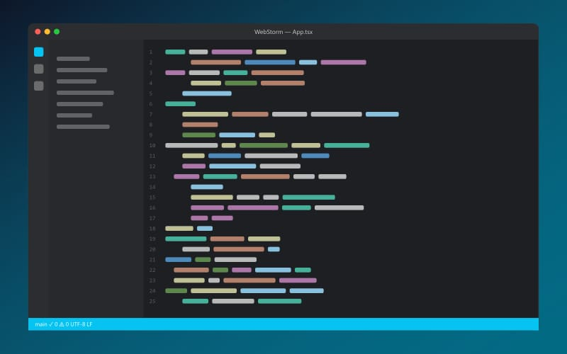

WebStorm
Среда разработки для JavaScript, TypeScript и Node.js.
Коротко
- Разработчик
- JetBrains
- Год выпуска
- 2010
- Цена
- Бесплатно*
- ОС
- Windows, macOS, Linux
WebStorm — IDE компании JetBrains для фронтенд-разработки и Node.js. Она сразу поддерживает React, Angular, Vue, а также npm-скрипты и сборщики Vite и webpack. Для некоммерческого использования WebStorm бесплатен, поэтому подходит студентам и для личных проектов.

Возможности
- Автодополнение для JavaScript, TypeScript и JSX.
- Рефакторинг с учётом импортов.
- Отладка кода в браузере и Node.js.
- Запуск тестов Jest и Vitest.
- Встроенные ESLint и Prettier.
Плюсы и минусы
Плюсы
- Отличная поддержка TypeScript
- Всё нужное уже встроено
- Надёжный рефакторинг
Минусы
- Нет поддержки PHP
- Тяжелее VS Code
- * Коммерческое использование — по подписке